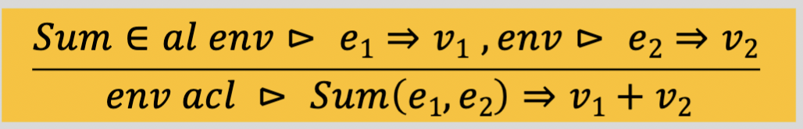
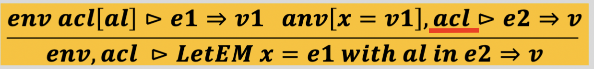
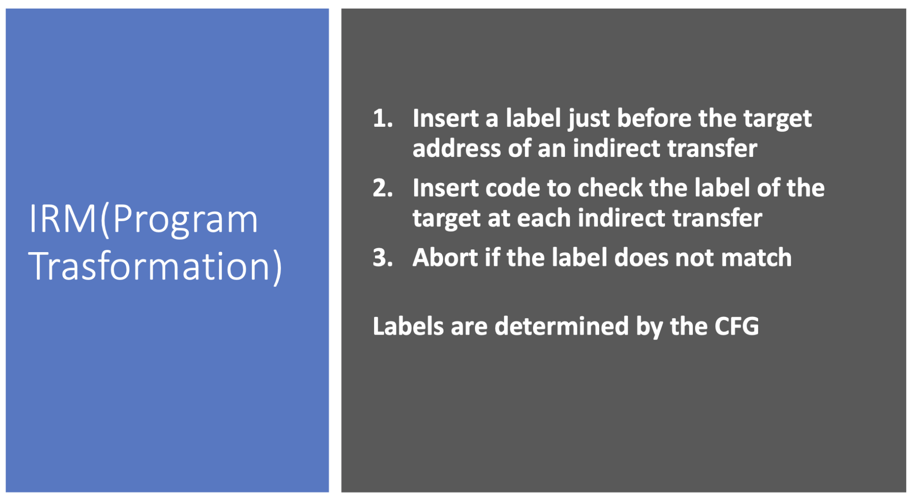
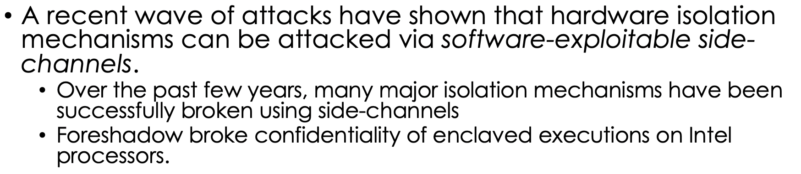
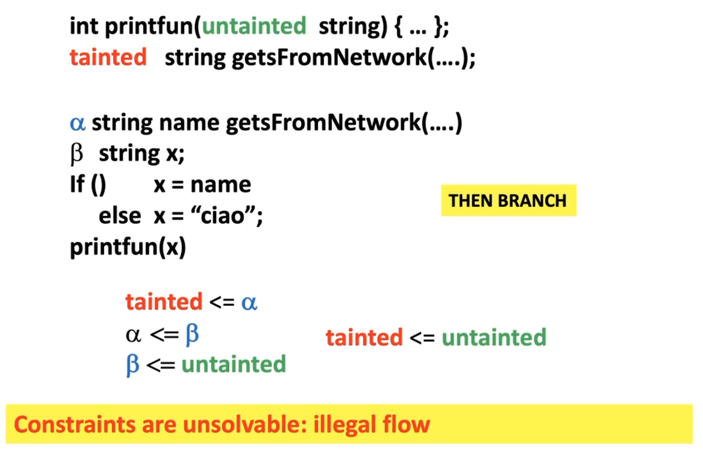
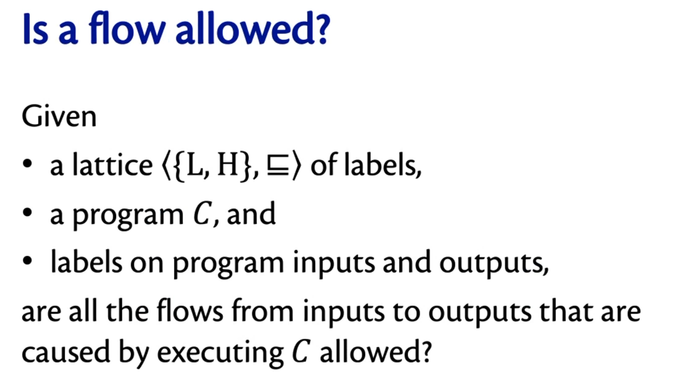
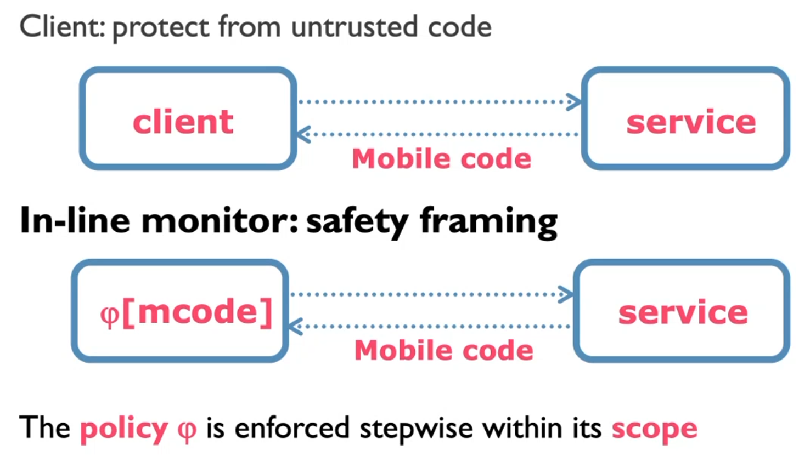
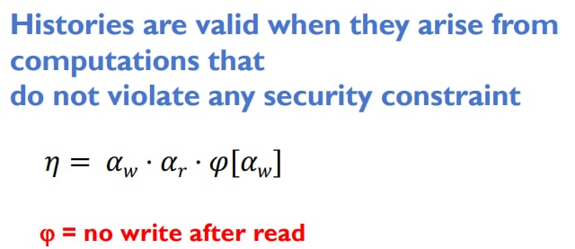

LBT Notes
- the 3 main security problems are
- (information) leaks
- buffer errors
- injection
- are based on vulnerabilities known for decades but which still cause damage
- a programming language is considered safe when it provides linguistic abstractions (and toolkits) to avoid these vulnerabilities
- practically none of the languages used to date can be defined as safe
- a secure programming language is not easy to build, there are several problems
- interoperability with the rest of the sw
- must run on virtual machines already made and with runtime supports already written
- the compilation must generate a target code that preserves the security properties
- how programming languages are implemented
- translate the source code into a target code executable by a machine (hw or virtual) and execute it
- possibility of doing very refined static analyzes and optimizations on the code
- first compilation phase and then interpreters (like java which first compiles into bytecode and then interprets that)
- LANGUAGE BASED TECHNOLOGY FOR SECURITY
- science that exploits the theory of languages to force software security to
- design and develop new languages already with safety in mind in the design phase design
- and develop tools and robe to secure the code already written
- example: changes to the runtime of a language
- there are 3 phases of static security policy
- enforcement: find and fix vulnerabilities before running thecode
- : identifies and blocks attacks at runtime
- audit: recover from damage and assign blame
- is possible to develop a safe language (guaranteed vulnerability free?), that is:
- it must never fail it
- must manage adverse conditions
- it must be reasonably efficient
- test tape
- 10k pages of formal demonstration
- that is, we can develop a "science of security"
- can we have certified safety demonstrations?
- can we evaluate security and make comparisons between two different programs? (more or less sure of ...)
- are there any security properties that are proven unenforceable?
- can we demonstrate that certain enforcement mechanisms can guarantee classes of policies and not others?
- the security problem is relatively recent
- computers have become so 'crucial and so' connected to each other in recent times it
- was difficult to make an attack because it was not worth it and because it was really difficult to reach the machine
- almost all programming languages today they are designed to be as fast as possible, not to be safe. In the clash between "functionality" and "security" the first always won,
- the time has come to consider the trade-off between efficiency (execution time) and security in the design phase,
- hoping that it is the individual programmer who takes care of writing code sure it proved to be unsuccessful (it is too difficult)
- the language and the whole toolchain need to lend a hand and that the dev is left alone to think about the logic of the program
- NB: cryptography is only a piece (relatively small in a sense) to achieve security
- security weakness / flaw: what is wrong or that could be done better
- accessible: the attacker must be able to "see" it
- exploitable: it can be exploited to do damage
- then becomes a security vulnerability
- flaw exploitable by an attacker
- DESIGN FLAW VS IMPLEMENTATION FLAW
- design flaw: inherent flaw or vulnerability of the system design (design error)
- implementation flaw: error introduced by human error (programmer) or by toolchain (compiler, ...)
- configuration flaw
- malicious exploiting of a desired functionality (email exploiting -> spam)
- flaws that can be found by looking at the
- typos code, errors distraction, names mismatch, ...
- errors in the program logic, errors in accessing data (out of bound ..), etc.
- flaws introduced by the underlying platform or by other services (os, compilers, ...)
- java code that models a current account
- private field amount
- public method deposit (int amount)
- running the program in JAVA guarantees us a certain level of security
- amount cannot be altered directly but only through the method offered by the class
- let's say this code is compiled "towards C" (target language C)
- class Account is translated as record (struct)
- field amount
- pointer to function for the function deposit (int n)
- security problems now are obvious
- anyone has direct access to the amount since C has no visibility policies,
- it is even possible to change the reference of the function pointer and when it is invoked deposit any code will actually run
- there is a big discrepancy between the abstractions that the programming language provides (JAVA ) and the compiled language (C)
- you have to consider all the attack levels
- take the example of before Account in JAVA
private int amount
public void decrease (int n) {
if (amount <= n)
amount = amount - n;
else
printf ("no founds");
}
public void increase (int n) {
amount = amount + n
}
- implementation flaw: wrong if guard
- design flaw: never trust the user: if n were negative?
- underlying flaw: and if amount + n were too large to be saved in an int type data (64 bit)
- As mentioned we would like to treat security as a science
- we would like a framework that defines the security of a system in a precise and formal way, so to
- evaluate the security of the specific system
- make comparisons in terms of security between distinct systems
- improve the design and implementation of new systems
- To try to develop a science of security we will use the security model approach, consisting of
- system model: description of the system of interest
- how the system behaves in favorable and unfavorable conditions (wrong inputs, attacks, ..)
- definition of the computational power and the degree of access to the system that attackers have
- definition of the security properties that we would always like to have respected
- ability to determine if the properties are respected for each behavior of the system ema or not
- when a property is compromised? is there 'a way to make the system behave in such a way as to compromise that property'?
- Confidentiality: no sensitive information is revealed
- Integrity: attackers cannot destroy the system
- Availability: attackers cannot make the system inaccessible to (authorized) users
- security models (system model, threat model and security policies ) provide the basis for security analysis, i.e. the system evaluation process
- does the system model guarantee the security policies when it collides with the threat model?
- EXAMPLE: Needham-Schroeder Public Key Protocol
- classic man in the middle attack between secure communications in which Eve manages to pretend to be A in the eyes of B and vice versa
- encryption is not the solution, but it is only a small block of cybersec : communications as such are secure but not enough
- allowed actions
- establishing communication
- A chooses a random number N_a and sends the pair <A, N_a> encrypted with B's public key
- B chooses a random number N_b and sends back to A the pair {N_a, N_b} encrypted with A's public key
- in this way B has shown that he can decrypt his public key, as he has accessed N_a
- A sends N_b back to B to confirm his identity ( encrypting it with the public key of B)
- once the identities are confirmed you send the message encrypting it with the recipient's public key
- description of the system
- the network is modeled as a collection of shared states isi among the main actors of the protocol
- each message on the network specifies a particular state of the network
- attackers can save and send back on the network
- cannot alter the content of encrypted messages
- can create encrypted messages using their private key (decryptable only with their own public key)
- invariant of integrity: exchange of nonce (N_a, N_b)
- secrecy: no attacker can decrypt and read anyone's secrets
- E deceives A and convinces her to initiate a communication with her and subsequently forwards the messages a B convincing him to be A
- A sends to E 's public key E
- E 's public key B and sends it
- B decrypts and sends to E (who he believes to be A) the message {N_a, N_b} encrypted with A
- E 's secret key A, so it forwards the message to A
- A qpoint A decrypts the message and as the last step in establishing communication A - E sends to E {K_b} encrypted with E
- the nonces are random numbers, you don't know who they belong to: A sends his nonce and yes expects a pair of nonces behind, the first of which is his. To prove that it is really A (that is, that it has the private key necessary to decrypt) A decrypts and sends back to E the nonce that it believes to be from E, when in reality it is from B
- E decrypts and reads N_b, policy violated
- the vulnerability 'and 'was found using a model checker
- MODEL CHECKER as fast as possible
- nondeterministic finite state automaton
- run automaton
- take a sequence (called word) of symbols A0 A1 ..An belonging to the alphabet
- we define run π as the
- a run π is called accepting if the final state qn is a final state (i.e. 'belongs to F)
- the language L (A) ⊆ Σ* accepted by the automaton is defined as the set of all finite words ⊆ Σ which have an accepting run
- a property E is a subset of runs (E ⊆ L (A))
- a property is said to be regular if its bad prefixes (i.e. its subtracks which are not accepting) are recognized from another automaton B
- EXAMPLE: MUTEX
- we want to guarantee the mutual exclusion
- of the automaton it recieves he knows the traces that DO NOT guarantee mutual exclusion and the following (automaton B)
- the automaton accepts the word if and only if two critical operations are done together
- we practically express the security policy that we want to verify with an automaton that verifies the denial of that policy
- verifying regular properties through model checking
- is given a system model T (expressed as a set of runs)
- the system model expresses the behaviors of the system
- and a regular property E is given (expressed by an NFA for bad prefixes) the question and ' T satisfies E? (T ⊨ E?)
- T are the behaviors of the system
- A and the automaton that ends if the security property is violated
- I "execute" the automaton with all the runs
- if I never "finish" it means that the property is never violated
- as actually doing the derivation we don't see it, but it is possible to do it relatively efficiently
- model checkers fall into the category of formal
- methods methods to eliminate flaws (design or implementation) so as to
- make the system safe
- make sure that, even if safe , the system does (only) what we expect
- a threat model that we will use often instead is the following
- Dolev Yao Threat Model: attackers
- can eavesdrop all messages on the network and can break messages into parts
- can save what they eavesdrop
- can remove messages from the network
- can send messages (new or overheard) to anyone on the network
- can not compromise in any way everything that involves encryption without having the right
- isolation: the execution of a program is somehow prevented from "touching" the execution of other programs
- monitoring: program that monitors the execution and operations performed at runtime of another program, possibly blocking the execution
- obfuscation : the code or data is transmitted in such a way that it is understandable only to those who know a secret, which is hidden from the attacker
- problem known for decades but still one of the main causes of security problems
- introduced in the implementation phase
- how do memory corruption flaws work?
- what can their impact be?
- how can we spot these flaws?
- static and dynamic analysis
- what can the underlying platform do?
- the language toolchain should help
- devs what can the programmer do about it?
- let's consider the following code C
char buffer [4];
buffer [4] = 'a';
- when the second line is executed anything can happen
- if you are lucky segmentation fault
- otherwise, if the attacker can check the value 'a', you will start a remote code execution
- for the semantics of C in this case anything can happen
- access to a part of "random" memory, the result is absolutely unpredictable.
- The compiler in fact assumes that "ok, in this case anything is fine"
- often the red line is "optimized" with a skip
- if all goes well everything is certainly fine also do nothing
- programs written in C (or in C ++) they are vulnerable to memory corruption because they do not provide any tools to avoid the problem
- the responsibility is totally left to the developer
- => memory corruption is the main cause of
- classic attacks cases of memory corruption
- access out of bounds to arrays or buffers
- stuff with the 'pointer arithmetic
- dereferencing null
- pointers dangling pointers
- memory allocation without verifying success
- the malloc returns null in case of
- memory leak error due to lack of free
- garbage collector, the memory is left dirty
- let's see the runtime of a compiled language (the C)
- the compiler determines the layout of the activation records at compile-time i generates the code that, when executed at runtime, will access the right locations
- epilogue & prologue: code generated by the compiler that is executed before the call function (push & pop AR)
- the data layout and data access are designed together with the compiler
- example: let's now look at a C library function gets (char * str)
- reads from stdin and saves in the string pointed to by str
- the reading ends only when a newline or an EOL is read
- looks at the stack figure: if the function f () invokes a gets the attacker could overflow and overwrite the return address of the activation record, and then execute anything
- code reuse attack: the attacker overwrites the return address making it point to already existing code (format_hard_disk)
- code injection: the attacker inserts his code into a buffer and points the return address to that buffer
- note that depending on how the compiler allocates on the stack there are things that may not be overwritten (an int before buff [0..3] would always be safe)
- example: library function (char * src, char * dst )
- same thing: the strcpy assumes that dst is long enough and that src is correctly terminated
- nb: neache strncpy (char * src, char * dst, int n) is safe
- I tell it to copy in dst less than the real size of src (a character and less, just the terminator)
- in dst an unfinished string ends there, now the attacker can read to the bitter end
- the good dev inserts the terminator in dst explicitly after the strncpy
- the good devs are very rare
- example: format string attack through printf
- printf (string) where string is passed by the user through stdin
- the malicious user passes me "% x% x% x% x% x% x% x% x% x"
- % x reads and printa bytes
- I delivered to all 'attacker all the portion of the stack resting on the string allocation
- to give the idea of how unsafe C is
- "in a correct program the addition to a pointer will not produce a pointer out of the allocated memory portion"
- the GCC assumes that no pointer overflow can ever happen on any architecture
if (buf + len> = buf_end)
return -1;
- any such checks are eliminated by the compiler at compile time because the guard is always assumed to be bogus
- bug caught by the linux kernel
- which optimizations are reasonable and which introduce errors or flaws?
- right now we rely on defensive programming: the programmer while writing is thinking about all the ways in which an attacker could act and plug the holes in the implementation phase
- it would be better if the language itself guaranteed that the strings are always terminated, without trusting the programmer who has other things to do
- safe programming language:
- in a safe language the programmer does not have to worry about accesses out of bounds
- the runtime realizes this and reacts appropriately (exceptions ..)
- adequate type systems
- control for the integer overflow
- the allocated memory is initialized by default
- the inaccessible memory is freed automatically
- ...
- unsafe: accepts and executes also non-sensible statements (eg access out of bound)
- the semantics of such instructions are undefined: in fact anything can happen
- the responsibility is left to the programmer: he must be the one to make sure that only instruction the correct (and safe) are then actually executed
- not only must "program well" but must also (know and) take into account the flaws introduced by the underlying platform (which goes from the compiler to the operating system up to the cpu)
- safe: the language is ensures that a statement is executed if and only if it makes sense and, when it is not, a specific error is reported (such as java exceptions)
- the responsibility 'is (as much as possible) of the language: it is the language to having to somehow identify (statically and / or at runtime) and / or prevent the execution of wrong statements
- C / C ++ are obviously unsafe
- Java and C # are designed to be safe
- java native interface features: it allows you to invoke native machine code
- ...
- therefore: a language is considered safe if and when it offers memory safety and type safety, and also
- the trusted computer base (TCB) (i.e. the underlying platform for the execution of the code you are writing) and must manage the behaviors of the
- example language: the jvm that executes the bytecode must maintain the security abstractions of java (duh)
- must be guaranteed ' compositionality
- in a safe language it is possible to understand the behavior of a program in modular way, and it is possible to ascertain the safety of a code fragment by looking only at that single fragment, without having to understand and check everything
- that the memory unsafety breaks compositionality.
- being memory unsafe the execution of P can access all the memory: it could therefore also alter the data used by module Q
- that the code of module Q is safe or not is therefore irrelevant: we cannot guarantee the safety of Q because this could be compromised at runtime by the execution of another module
- policy = "Q does not allow information leaks": perhaps the source of Q and its ese cuction verify the policy, but this is compromised by P that could make a print attack and leak all the data in memory
- . In principle, a program written with a safe language cannot crash due to segmentation fault.
- Theoretically we could disable the memory checks made by the OS
- in reality the type-checkers, the compilers and the whole toolchain are still pieces of code written by humans, so they could in turn have bugs and allow (rare) behaviors not allowed
- . memory access control of the operating system is however fundamental
- PLATFORM LEVEL DEFENCES (RUNTIME & MEMORY ORGANIZATION)
- methods of defense against attacks provided by the compiler, the OS, the hw machine and so on without the dev being aware
- some techniques may need support hw
- others introduce overhead
- others break compatibility with already compiled codes
- Defense # 1: STACK CANARIES
- a dummy value (called canary or cookie) is inserted at compile time on the stack in front of the return address
- the overflow corrupts the canary and the attack is detected
- the compiler that implements the canaries produces epilogue and prologue different from the original compiler!
- prologue and epilogue are richer!
- runtime support is extended
void fun (const char * input) {
char buffer [12];
strcpy (buffer, input);
}
- the prologue must push the canary onto the stack immediately after the control data (the return address) and before allocating the local variables
- the canary-enabled epilogue must check that the canary still contains the original value before resetting the program counter
- __stack_chk_guard = original value of the canary
- __stack_chk_fall = callback function called in case of detected stack buffer overflow
- heap overflow attacks are not minimally managed
- Defense # 2: IBM ProPolice
- overflow is dependent on the order in which the stuff is allocated
- random rearrangement of the stack to reduce damage
- even better: allocate all buffers on top, on top of all the other elements
- Defense # 3: Shadow Stack
- a hidden stack (and that must not be compromised) keeps a copy of the return address
- overhead higher but higher security
- Defense # 4: Non Executable Memory (NX Memory)
- we structure the (virtual) machine of execution of the language so that there are portions of "executable" and other "non-executable"
- memory executable memory: contains the code
- non-executable memory: for data storing
- the cpu or virtual machine (eg. jvm) refuses to execute code contained in non-executable memory
- the attacker does not it can no longer jump to its code as all inputs (and therefore any malicious code that the attacker passes me) are saved in non executable memory
- intel calls it eXecute-Disable (XD)
- AMD calls it enhanced virus protection
- limitations
- upfar we have only considered cases of ahead-compiling
- I have the code and I compile it all (and I get an executable target code (from the cpu or from the virtual machine it doesn't matter)
- NX Memory fails in case d ella Just In Time Compilation
- I read a line from the source
- the co mpile
- I
- read the next line
- the case of code injection is covered but the code reuse attack is still possible
- so you have to be very careful with the
- libc for example it offers a lot of functionality potentially usable in a malicious way (exec (), system (), ..)
- the compiler translates the function calls of the source code into call <address> of the target code (for example the assembly) where <address> is the address of the function code
- in C for the invocation of the function f () it may be possible to know the static address (or the correct offset) of the code a compile (staitc) time
- if the compiler manages to hard-wire the addresses in the binary and NX memory is used it is very difficult for the attacker to do damage
- when it fails (for example with virtual methods in C ++: or -> m (); the address of m () is determined at runtime by looking at the virtual method table (vtable)
- in these cases it is possible to do damage
- Defense # 5: Fat Pointers
- we have seen that many of the problems related to memory safety are due to the scarcity of information regarding the memory (in C a pointer tells you only where the memory area it points to begins and the type of data it contains)
- intuition: add information to the pointer regarding the size of the memory chunk pointing
- records the information relating to the dim ension
char * p = malloc (5 * sizeof (char))
- pointer: p -> [s][t] [u] [f] [f]
- fat pointer [p | 5] -> [s][t] [ u] [f] [f]
- has two major disadvantages
- execution overhead notable
- non-binary compatible: all existing C code must be recompiled with the new compiler that adopts fat pointers
- Defense # 6: "Typed Data Descriptor"
- idea on the same strand of fat pointers: adding information about the size
- here instead of adding info to the pointers we add them directly to the memory chunks
- and 'a solution adopted by JAVA, for example
- JVM: the data contain information regarding the data
- controls at runtime, increased overhead
- CONTROL FLOW INTEGRITY (CFI)
- extra information and controls to identify unexpected control flows
- the code has a flow (REPL, with related function calls)
- an attacker can compromise the flow in various ways and for various purposes
- code injection, code reuse attack, ...
- so far we have seen dynamic return integrity (d ynamic, that is' runtime techniques that require "only" to change the language toolchain)
- stack canaries and shadow stacks
- allow checks and verifications to avoid the manipulation of the return points
- the idea is to perform static analyzes on the code and to determine the control flow graph (cfg) and then to monitor that at runtime no jumps that are not allowed or foreseen are made
- if in the code of the function f () the call to the function g () never appears then if at runtime g () is called while executing f () there is something suspicious (as well as the return from g () to f () is suspect)
- STATIC ANALYSIS (FOR SECURITY)
- until now we have focused on the runtime
- now we see security techniques used in the backend of the compilers
- we always assume to get the abstract syntax tree (AST) from the frontend: the programs are syntactically correct
- automated analysis at compile time for the detection of bugs
- simple static checks (grep on patterns)
- type checking (int + bool not allowed)
- advanced analyzes that take into account the semantics
- dataflow analysis
- control flow analysis
- symbolic eval
- model checking
- ...
- in the sw development process the static analysis is in fact called the code review
- I wrote the code, I designed and wrote the tests: before testing I do code review
- the static analysis is fundamental
- the code is too and too complex to do the check manual
- test cases can leave out particular and unexpected cases (strange inputs built ad hoc)
- static analysis tries to answer the following questions
- the prog ramma ends with every input?
- how big can the heap get?
- can there be leaks of confidential information?
- ...
- what will be in this variable x?
- can the pointer p be null?
- p and q point to two different structures in the heap?
- ...
- in fact to do static analysis we use a program that analyzes programs
- program analyzer: a program that takes as input another program P and tells us if P is correct or if P fails for certain inputs (etc.)
- we obviously would like the analyzer perfect
- soundness: all errors
- completeness: no false alarms are raised
- termination: the analyzer always terminates
- rice theorem: all non-trivial properties concerning the behavior of programs written with turing-equivalent languages are undecidable
- we should therefore resort approximation, that is, we would like
- an acceptable number of false positives / negatives
- not too many warnings
- a good error reporting
- that the bugs are easily fixed
- the possibility of teaching the analyzer which false positives are to be ignored
- NB: the program analyzer tends to be "included ”In the compiler
- we see short examples of static analysis
- warnings relating to unused, uninitialized or al dead code (post return) are all examples of static analysis
- prohibiting uninitialized variables could be not so much the static analysis but the definition of the language itself (eg java)
- the second case gives an error because cod I'm sure not initialized
- there are obviously limits to what the analyzer can do
if (b) {
c = 5
}
- the variable c is initialized? depends on the value of b
- the analyzer as mentioned can either answer "boh" or give false positives / negatives
- the static analysis performs (among other things) some optimizations at compile time
- example: consider the following C code
- the value 0 assigned to x is never used
- dead store optimization: assignments whose values are not used are deleted it
- optimization correct in terms of efficiency but it is terrible in terms of security
- x = 0 it is statically replaced (without notifying the dev) with skip and the program (which was initially safe) is transformed into an unsafe program by the compiler
- the challenge is therefore balancing the optimizations
- the performances are crucial, but now safety is just as important the
- static analysis terms, given a program,are identified program points
- a program point is a point in the code structure which will then correspond to a value in the program counter (PC)
- any point in the program = any value of the
- invariant PC: a property that holds at every execution point of the program
- a property is invariant in a program point if for each possible input the property is verified when it "arrives" at that point
- Safe Programming Languages Design
- to design a programming language (and to write programs) it is necessary to decide / understand how the language works
- the semantics of the operational semantics language must be defined
- : definition of rules for step-by-step evaluation until you get a
- semadenotational technique: defines mathematical functions for the interpretation of language constructs and evaluates the program by combining the
- axiomatic semantic functions: provides rules for reasoning about programs
- here we see the denotational semantics and we will useto define small functional programming languages that adopt specific techniques for safety
- the interpreter of the languages we will write will be implemented in OCaml
- it is very convenient to represent the data and simulate the REPL
- NB: OCaml is an eager language (not lazy) and therefore the evaluation of the parameters is done before passing them!
- MicroFUN: our functional programming language
- (OCaml) AST for MicroFUN: representation of the syntax in terms of abstract syntax
- Prim of string * expr * expr
- primitive arithmetic expression
- string represents the sibule of the operation (+, ...)
- the other two expr are the operands
- Let of string * expr * expr ~~> let ... = ... in ...
- Fun of string * expr
- anonymous functions with a parameter and a body
- string is the identifier of the formal parameter
- expr is the body of the function
- I can give a name to a function using Let that associates an identifier to an expr (which can be the Fun)
- function invocation: it takes the function itself and the evaluation of the current parameter
- in MicroFUN the recursion is not foreseen since the
- recursion and the construct for the loop are missing we see that the language is not equivalent turing (pace)
- running a program written in MicroFun (i.e. evaluating it with our interpreter) therefore means receiving an AST and evaluating it according to the precedence of the operators
- in fact we make a visit to the AST until a numerical or Boolean value is produced
- MicroFun RunTime Structure (Stack)
- MicroFun has static scoping: the visibility of the variables depends on the static structure of the source (from the position of the variables in the code)
- when I declare a function it will have associated an environment (env) of visibility that corresponds to the scoping of the function when this has been declared
- in this way the function "sees" always and only what is statically visible
- to it on the contrary in dynamic scoping the visibility depends on the execution of the program at runtime
- represent the booleans as integers
- the types at runtime are as follows
- string is the name of the formal parameter
- expr is the body of the function
- value env is the static (syntactic) environment
- attention: MicroFun is functional and as typical the functions are values as much as the integers
- to define the interpreter we must give the semantics (denotational, expressed with inference rules)
- nb: the yellow part is the "implementation" of the inference rule
- identification evaluation

- primitive arithmetic operation
- obviously the let performs operations on the environment
- remember that the let has the form of let ... = ... in ...
- we evaluate erhs (the value to be assigned to x) in the current environment and we put it in xval
- we create a new env1 environment with the new association (x, xval)
- we evaluate the body of the let in the new env1 environment
- we are in fact simulating the push and pop of the activation records on the stack
- (push ~~> evaluation body ~~> pop)
- what happens when in the current environment i find a lambda?
- the closure must be constructed (so as to be able to merge the static environment)
- x: name of the formal parameter
- e: body (code) of the function
- env: pointer to the current, i.e. the one in which the function is declared
- what happens if it is to be evaluated in the environment an identifier that corresponds to a closure?
- fDecEnv: declaration environment of the function
- va: evaluation of the argument
- step1: I evaluate the parameter (extending the current environment but only because the lets always have in
- step2: I extend the fDecEnv environment with the association relative to the parameter (associo to x (formal parameter) the value of the parameter (va)
- step3: I evaluate the body in the new environment with
- if this returns me the value v then the evaluation of the function call is v
- also in this case the simulation of the push and of the pop in the stack of the activation record for the function called
- MicroFun Interpreter Code

- we have, in the programming language of your choice, a mechanism M that can
- be used by the programmer the programmer defines his own security policy P (based on what the language allows)
- can we prove that the mechanism M enforces policy P?
- what are the good policies?
- can we express all the policies?
- ...
- how does M work?
- a mechanism (a program) that controls (monitors) the execution at runtime of an untrusted program
- the events are mediated by the EM (for example the system call)
- example: file system access control
- the EM is (inside) the OS
- checks the validity of the policies using the access control list
- the EMs are modules that run in parallel with an untrusted application
- the purpose is to prevent, detect and remedy errors (or operations intentionally malicious) that the application executes at runtime
- the decisions of the EM can be made based on the execution history
- , i.e. it evaluates that the security policy is respected before the current operation and that it is respected after the end of the operation
- , otherwise the EM does not allow (or cancel) the
- we see a program S as a set of tracks (S1, S2, ...)
- a policy P is a property of the program (or programs)
- a policy divides the program space into two
- acceptable (permissions) unacceptable
- ( not allowed)
- these programs are somehow "censored"
- terminated in runs that violate P
- access control policy: relating to the use of certain resources (such as files) or system calls
- availability policy: if a program acquires a resource it must also release it (sooner or later)
- bounded availability policy: if a program acquires a resource it must release it within a fixed time (eg: within the execution of this program point)
- the property 'P denotes the set of traces (a language of traces ) L (P)
- the trace s satisfies the property P sse s belongs to L (P)
- What are the policies that can be verified (enforced) by an Execution Monitor?
- safety policy: a policy that satisfies (1), (2) and (3)
- "a bad thing never happens"
- at each step of the system execution the system is safe, as soon as it stops being safe block all
- execution monitors allow to satisfy the safety policies
- liveness property: "something good eventually happens"
- nb: "liveness" means "vitality"
- for example nontermination: "the mail server will not stop running"
- these policies cannot be purely enforced at runtime
- the safety and liveness properties are crucial in theory
- theoretical result: each property is the intersection of safety property and liveness property
- EM can only see the past, they have no idea what will happen in the future
- that's why they can force safety properties but not liveness
- the monitor has access to the entire state of the computation
- the monitor can have an arbitrarily large state
- the properties of safety enforced are module the computing power available
- the predicate that the monitor uses to determine if it should terminate the execution and 'computable
- analyzes the single (current) execution
- the execution must be terminated as soon as the prefix invalidates the p olicy
- ㄱ p (τ) => (∀𝝈: ㄱ p (τ𝝈))
- τ is a finite trace
- 𝝈 is a trace (not necessarily finite)
- the juxtaposition concatenates two traces
- must identify the violations in finite time
- ㄱ p (𝝈 ) => (Ǝi: ㄱ p (𝝈 [.. i]))
- [..i] is the postfix operator the prefix of a given track along the steps
- enforceable policy => safety property
- recognize (accept) the language of the permitted executions
- as an alphabet have the set of events (defined above)
- on the arcs have the current event
- all states are accepting (prefix closed: each instruction could be the last, until the policy is violated everything ok)
- easy example: no sends after reads
- the policy specifies that after executing a read (on a file) no data must be sent (on a socket)
- the automaton accepts all the executions that respect the policy
- Traditional Monitors Execution problems
- inefficient: tape context-switch between EM and monitored program
- TCB too large: OS
- weak the EM cannot see the internal operations of the program but only the interactions that the program would like to do with the
- little modular OS: changing the policy requires changing the OS
- In-Lined Referenced Monitor (ILRM)
- basic idea: implement the execution monitor by in-lining its logic into the untrusted code
- we want to hard-wire the logic of the EM in the executable code of the untrusted program
- the inlining procedure must however be automated
- there are several problems to manage
- how to automatically generate the EM code?
- how to preserve the logic of the untrusted program
- how to prevent the programs from corrupting the EM?
- executes the automaton inlining before each event (generated by the untrusted program binary)
- partially evaluates (specializes) the edges of the automaton before the event it controls (some edges will disappear completely)
- generates the guard code for what remains of the automata
- In-Lining Algorithm Actual Steps
- insert security automata: insert a copy of the automaton before each target instruction in the program binary untrusted
- evaluate transitions: evaluate the predicates of the transitions (predicate "the target instruction can cause the transition? ") for each monitored instruction
- simplify automata: delete all transitions that have the transition predicate false
- compile automata: translate the remaining automaton of each instruction into target code.
- if the added code detects a violation of the policy (ie 'the auto refuses its input (execution)) a fail
- we have the "push exactly once before return" policy

- and we want to inline the policy in the following binary code
mul r1, r0, r0
push r1
ret
- simulation of the algorithm is the following
___________________________________________________________________
- Computability Theory (duh)
______________________________________________________________________________
- (Security Policy) Enforcement Strategies

- Execution Monitor as a programming language primitive
- design a programming language (based on MicroFUN) that has execution monitors as a linguistic primitive,
- so we bring a mechanism designed for security into the programming language
- and then we develop its interpreter (extending that of MicroFUN)
- Requirements of the EM as language primitive
- must be able to access the runtime data concerning the events relevant to safety
- what is the next instruction that is about to be executed?
- must be able to terminate the execution (in the event of an attack detected)
- or in any case block everything and bring the program to a good state (such as a request for confirmation from the user)
- must protect the status of the monitor and the code from any
- tampering compiled must become part of the TCB of the runtime support of the language (NX Memory? ..)
- must have little overhead
- FunEM (functional micro language with EM as primitive)
- reaches us directly the AST
- Access Control (embedded in the language!)
- Is the (arithmetic) operation I want to do allowed?
- alist: access control list
- op: operation that you would like to perform
- it recursively scrolls the list until it finds the authorization for the passed operation
- if it does not find it, it returns false and the operation is declared inadmissible
- the ACL it must not be corrupted by attackers, that is, must it be part of the TCB of the language
- where I save it at runtime? in a non-executable memory
- We define the interpreter
- evaluation of an operation (arithmetic: in this case +)

- here we see how much our language is eager
- the overall code is in fact derived from the three cases above
- at this point we take a further step we
- introduce the execution monitor!
- not that it goes to monitor the whole program but a particular code fragment
- we can therefore define and force security policies on code fragments
- in a compositional way we can use code fragments that we consider to be safe as each will have its own custom EM that forces the policy adequate
- letEM x = e1 with al in e2 we
- introduce (with this abstract notation to ocaml) an execution monitor that inserts a security policy (defined by the access list al) that must be respected in the evaluation of e1 and e2
- is an extension of the let: now it manages the security policy
- we are adding a local for the evaluation of e2 (body of the let)
- but now we have to extend the language of arithmetic expressions with the local execution monitor
- iexp stands for "inlined expression" to underline the presence of the 'em embedded
- letEM x = e1 with al in e2
- x: ide
- e1: iex
- al: acl
- e2: iexp
- the code we want to monitor with the new policy
- now introduce I love local policies with the letEM
- we must therefore also extend the access control list and manage this duality between local and "global"
- al2 is the local list
- concatenating al2 at the top
- I could therefore "override" the permissions (cool!)
- now extend the interpreter
- everything as before except the EM management

- where acl is the new extended access list (al_acl)
- NB: simle ACLs (like the one we just did) are representable as (trivial) automata
- EMs are much more complex than this
- they perform computations arbitrate to decide whether to allow or block a given event
- they can have side effects
- they can change the program control flow
- NB: step for the design of the interpreter (post frontend)
- definition of the syntactic structure (AST )
- type expr = ...
- definition of the values "at runtime"
- definition of the runtime
- implementation eval (post inference rules (semantics))
- extend the language seen above in such a way as to allow the definition and call of function
- with acl: a function can be admitted or not through local (letEM) or "global" permissions (acl)
______________________________________________________________________________
Parenthesis on IRM
- we have seen how to instrument code (related to a security policy) in the binary of the untrusted program, so as to make it trusted
- this is the example of instrumented code
- the dev who writes the untrusted program uses a language that is then compiled in a target language
- in reality the runtime uses another program (that is, it 'executes another code than the target one), due to the inlining of the automata
- here we see a similar example
- I get a code to interpret (post frontend)
- I perform an intermediate compilation step in which I inline the automata for the enforcement of the security policy
- practically the eval of expr builds iexpr (intermediate expr), which is enriched with the information necessary for the enforcement of security policies
- " then I generate another binary "
- I interpret the new iexpr code with ieval
______________________________________________________________________________
- idea: observing the behavior of the untrusted program
- is it doing what it should?
- how to define "expected behavior"?
- how to (efficiently) identify deviations from the expected behavior
- how to avoid compromises of the detector?
- also include behavior detection
- state of the art compiler that does a lot of static analysis.
- Integrity (behavior detection & static
- analysissource
- on the binary
- an execution profiling is then done
- profiling the possible program executions
- if the execution at runtime diverges there are problems
- we define security policies
- if the executions (which in any case respect the profiling) violate the policies there are problems
- representing each instruction with a node makes everything too heavy and there is an explosion in the number of nodes
- the cfg nodes are the basic blocks
- sequence of instructions with a specific input and output
- you cannot jump out of the block by way sleepers
- the first statement of the block
- a branch of a conditional (the block starts from the then branch of an if)
- ...
- intraprocedural analysis (as in the example above)
- analyze the single function
- analyze the whole program and account for function calls
- Intra-Procedural Analysis
- build a cfg for each function
- "assemble" the cfg to understand inter-function calls and their returns
- Control Flow Integrity (CFI)
- restricts the control flow of a program to the set of valid (allowed) traces
- this is done by comparing the possible allowed traces (cfg) deduced at compile-time with real execution at runtime
- as it is actually done enforcement through CFI?
- for each control transfer (eg function call) statically determine the possible destinations
- enter at runtime a unique bit label for each destination
- insert binary code at runtime that will check if the bit label (pattern) of the instruction matches the pattern of the possible destinations
- summarizing : CFI ingredients
- identify deviations from permitted behaviors efficiently
- IRM (inline reference monitor)
- avoid tampering with the detector
- randomness in the generation of bit labels at each execution
- the attacker cannot prefabricate labels that allow the jump to malicious code

- direct calls are explicit calls whose register can be statically calculated by the compiler
- direct calls always have the same target
- the compiler is part of the TCB those addresses inaccessible by the attacker and therefore should not be checked
- indirect transfers are transfers whose call and return depend on the parameters
- return x <y (it may not return, it depends on x)
- how to force security by checking only indirect transfers

- Always using the same (bits) lable is not safe
- distinct labels based on the call
- it is still possible to carry out control flow attacks by making calls that the cfg allows but which have harmful effects
- (solution: shadow call stack)
- data-only-attacks not covered
- malicious arguments (eg: system call)
______________________________________________________________________________
- safety: protect the system from accidental failures
- security: protect the system from active attacks
- basically what is good for safety is also good for security
- Safe Programming Language (again)
- eg: safety levels for the buffer overflow
- with "safe" here we mean that there are no negative effects for the safety
- no info leak
- no malicious code
- ..
- Notion of Types & Type Systems
- a type system is a collection of rules that assign types to language constructs
- add constraints for the validity (semantics) of a program
- violate them causes errors that can be prevented and identified at static time (type checker in the compiler)
- defines which operations are possible for each type defined
- provides a formalization of the rules (semantics)
- the type rules are specifically defined on the structure of the expressions (expr)
- the rules are specific from language to language
- Type Checking vs Type Inference
- type checking: process of verifying compliance with the types in full-typed programs
- can be done in static rime, at runtime or in a mixed way
- type inference: process of deriving the types of a certain "objects"
- type soundness (aka type safety or strong typing)
- the assertions (the predicates which are based on type correctness) in the implementation phase are also maintained at runtime
- type control in phase d static analysis
- defining a type checker is in fact like defining an interpreter of a language where the values that are calculated by the interpreter are the types
- Static Types vs Dynamic Types
- type-safe languages guarantee that a program that passes the phase type-checking data manipulate data correctly in relation to their type
- eg: they do not add up between bools
- a type safe language a priori excludes a lot of errors (and vulnerabilities) at runtime
- NB: the definition of access modifiers is gray ( private, public, ...) that "are treated" as "type extension"
- if you modify (in C ++) a private int you are breaking the type soundness
- Avoiding Buffer OverFlows in Java
- NB: type safety is a property very delicate, it takes very little to compromise it
- example: type confusion attack
- distinguish the data that "can be null" from "safe not null"
- Language based Guarantees
- THREAD SAFETY & ALIASING ( & RACE)
- thread-safety: the behavior of the program remains correct (safe) even in the presence of multiple threads that run in parallel
- APPLICATION LEVEL SANDBOXING
- isolation: combination of confidentiality and integrity of data and code
- inter-process fundamental security properties
- what is the trusted computer base?
- compartmentalizing critical functions within a trusted process reduces the functionality of the TCB but extends it with the compartmentalization mechanism.
- compartmentalisation can be controlled by security policies
- how complex and expensive are these policies?
- what about input and output
- we want interaction interfaces (java nio type) just as simple and efficient (even if compartmentalized)
- Secure Software Engineering
- Safe Programming Languages & Access Control
- in a secure programming language the access control can be provided at language-level , since the interactions between components can be limited and controlled by the abstractions of the language itself
- CODE BASED ACCESS CONTROL
- through the access control (done as you like, even language based) you can get the compartmentalisation
- limits the actions that the program can
- basically do with the language based you can do it without the compartmentalisation problems seen before
- different parts of the program are treated differently
- based on the access control of that portion
- access control (code based) works on top of the user-based access control of the OS access control
- ingredients (code based and not)
- permissions permissions play a role in management of the method invocation
- stack inspection has as a hypothesis the linguistic primitive that allows the overriding of the permissions by the programmer, who takes the responsibility "to tell the runtime" to perform privileged operations
- in f I may want to do operations for the which heg are not authorized
- I programmer can tell the runtime that f can do the stuff and that I take responsibility for
- it otherwise if heg does not have the permissions it fails
- Programming Stack Inspection
- the stack frames are annotated with their protection domains and permissions guaranteed to them
- during the inspection stack frames are searched starting from the most to the least recent (last called to callers)
- fail if an inspected frame does not have the appropriate permissions for the current
- succeed
- if all stack frames have permission to perform the operation
- if the programmer has taken responsibility for performing privileged operations
- stack inspection algorithm
- What about unsafe programming languages?
- sandboxing not at language level

- the enclave requires hw support (intel sgx)
- Why do we look at secure enclaves (and hw support)
- we are interested in language-based security
- where are the points where information flows?
- channel: the means through which information passes
- legitimately channel: intended channel for communication between two modules
- covert channel: channel not designed for the transfer of information but which can be exploited
- storage: written by one module and read by another
- , we want to restrict access to information to only those who have the right to access
- property of isolation is still fundamental
- there are cases of very harmful attacks (specter, meltdown, ..)
- speculation on modern processors
try {
i = secret;
V = M [i]; // speculative (loaded in cache)
} catch (IllegalReadException) {
// attacker use the handler to leak info
for j in 0 to Max {
read M [j];
}
}
- example of covert channel: used a channel not foreseen for the transmission of information
- the cache is the cover channel
- tainted analysis
- security types for information flow
- trace the information flow of a program through static analyzes
- identify the source of taint info ("infected" information)
- format string
- SQL query malicious (sql injection)
- ...
- identify the propagation of taint
- trace "the instructions" that manipulate the data in order to understand if the result of the instruction is tainted or not
- if analysis finds that tainted information could be used where untainted data is expected it is notified of potential vulnerability
- Tainted Analysis in Action
- everything there public in
- trusted code - untainted (secret)
- everything that is secret / inaccessible to the attacker
- with (type of) intends tainted / untainted
- g expects untainted: if it is detected that the current parameter of g is tainted then
- the whole analysis is blocked and in fact a type inference
- you do not want to understand if x is int or bool but if it's tainted or not
- Tainted Analysis Algorithm Example
- step1: annotate with fresh qualifier (alpha and beta)
- step2: generate the constraints for each staintment
- nb: x <= y read how x goes to y
- the arrow is practically the opposite
- step3: check the constraints and see if there is a solution

- The information flow intersects with the control flow
- if I drop the conditional I get
- x = name (tainted)
- x = "hello"
- in this case I get a false alarm
- the system tells me that x is tainted even if in reality x ishas been overwritten
- for each assignment of the same variable you create a new variable (a versioning of the single variable)
- good news: path sensitivity makes analyzes much more precise
- bad news: path sensitivity makes analyzes much more complicated
- classic trade off precision vs scalability
- Next Step: how to manage tainted flows towards
- function calls handling function calls
- Problem: two calls to the same function id ()?
- the problem is called context insensitivity
- the two calls to the same function are confused in the graph (cfg)
- we need a context sensitive analysis that distinguishes the calls
- handling context sensitivity

- put that I want to copy the array of char src (tainted) into dst (untainted)
- if I check that each element of src corresponds to one of the possible chars (as a "static" integer, I try them all) I make the src data untainted
- but the information is tainted
- Information Flow (management of implicit flows)
- without using the constraints given by the program counter you have an implicit flow!
- this ensures that aliasing constraints are also considered
- integrity: the inputs are dangerous for the integrity of the
- confidentiality data: the outputs are dangerous for the confidentiality of the data
- all those unexpected information channels that can give information on confidential information to the attacker (or in any case help him to make speculations)
- other covert channels may be
- machine noise (means high load on the cpu)
- power consumption
- ...
- a policy on IF specific to data restrictions
- example of policy for confidentiality
- the value v and all data derived from v must be readable only by the user A
- v is allowed to flow only to A


- Under a non-interference provision, a computer is seen as a machine having inputs and outputs. These are categorized in terms of their sensitivity as low (not classified information, or having a low sensitivity) or high (sensitive, and not to be viewed by individuals or resources without the necessary clearance).
- According to the conditions laid down by the model, any sequence of low sensitivity inputs will produce outputs which are correspondingly low, regardless of any high level inputs that may also exist.
- if a C program satisfies NI all flows from input to output are allowed
- other covert channels can be
- where for a program C and related mapping variable to label {L, H}
- and for each M1, M2 is the non-interference policy
- C (M1) = LC (M2)
- program C, taking two memories M1, M2, always produce the same “observations” (observable by the attacker)
- as we have defined the latex and the policies there are problems related to the combination
- you always take the biggest restriction
- say you have two Low data
- Students name
- Exams grades
- the combination of these should be H but in reality it will be defined as L
- the combination of these should be H but in reality it will be defined as L
- secret message, symmetric key (HIGH)
- encrypted message: it should be LOW!
- we need to define a declassification process
- define who how where and why it downgrades security
- TYPE SYSTEM FOR INFORMATION FLOW
- don't forget the context (if then else)
- gamma is called the environment of types
- the type system is conservative: it admits false positives
- that is, 'satisfying the type checker but not the non-interfirence
- Can we build a complete system?
- the whole type system shack does not manage at all the covert channel constituted by non termination
- but this way you have type problems!
- Let's bring everything to RUNTIME (type checker) and see if we can reduce the number of false positives related to NI
- a dynamic mechanism could leak information when it decides to terminate an execution due to a failed check

- the stop is due to the context of the then!
- above: the else branch
- below: the then branch
- it is not sound because on the two branches it has a different type
- I do static analysis on the fly before running the guard (at runtime you don't check both branches, statically yes)
- hence: inference of types relating to non-interference
- Programming in a World of Stateless Service
- In-Line Monitor: Safety Framings
- you have to instrument the mobile code so that it does no harm
- the opposite of before: the client has no computing power and therefore does a remote execution
- function selection
- The solution is
- mobile code download and execution
- voglio un comportamento tau_0 e il servizio mi risponde un codice che va da tau_1 a tau_2 rispettando la politica phi
- tau_0: "Give me the code to analyze this data I have"
- Service: responds with some code that analyzes that data
- Minimum Privilege Principle
- programs must have the minimum set of permissions, just enough for them to work
- a service must always obey all active policies
- the policies must always be able to see the entire history
- publication of a service (functionality)
- think about remote methods in java
- Service Orchestration

- what is a plan?
- who do we trust
- SERVICE: FUNCTIONAL + SECURITY + COMMUNICATIONS
- NETWORK SW ARCHITECTURE
- Plans (mapping requests to service endpoints)
- HISTORY DEPENDANT ACCESS CONTROL
- Abstract Machine Definition
- NB: the execution ends with a value v
- v: variables, abstractions (functions) or requests
- Inference Rules for Abstract Machine Executions
- abstract machine network behaviour
- plan passed by the orchestrator, local computation step produces an evolution of the plan
- asynchronous execution: one part of the network takes a step (not shared) -> all part of the network has taken that step
- request: l requires r with parameter v and the plane pi specifies that r does the (pi = r [l '] | pi') so
- l with history eta goes into wait for the and in parallel executes it with history null and parameter v passed by l
- reply: same but backwards
- An alternative Formulation
- services: an execution state
- stand alone services

- obviously the rules of inference seen above must be redefined, adapting them to the new formulation which includes the flag m
- PLANNING SECURE SERVER COMPOSITION
- SECURE ORCHESTRATION STATICALLY

- Type System for Orchestration
- Tyoe system with twice effect
- types


- the service is evaluated on a tau type and its behavior (abstract, i.e. kinda static simulation) is denoted by H
- there are the inference rules to be constructed to statically infer H (which is the linguistic expression that approximates the behavior of the code e)
- tau is the type of data that computes e
- H is the approximation of the how and calculates the data of type tau (statically derived with the right type system)
- once you have built the type checker that builds H you can do model checking on programs whose security policies must apply to the history
- All this effor to make the orchestrator safee